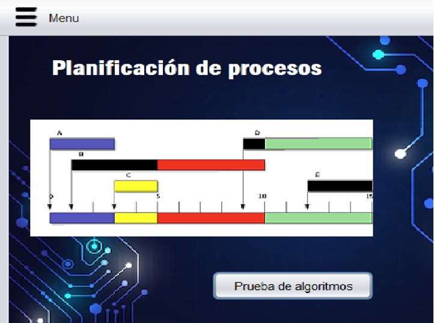
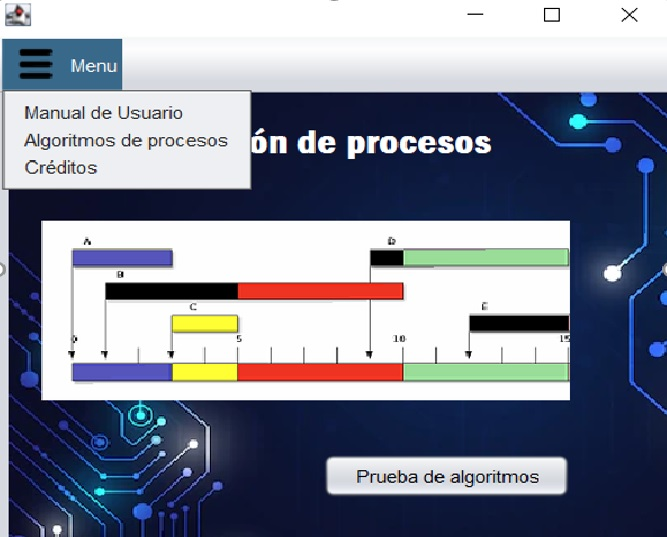
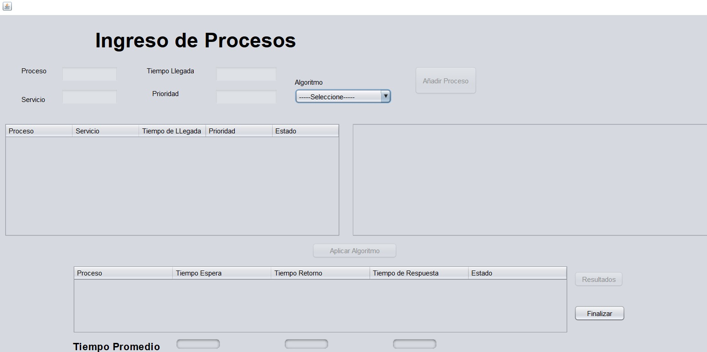
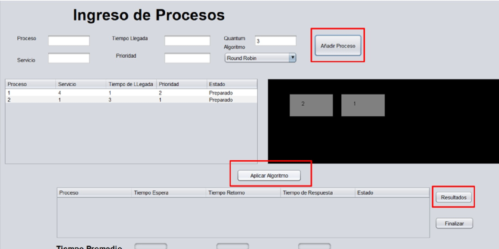
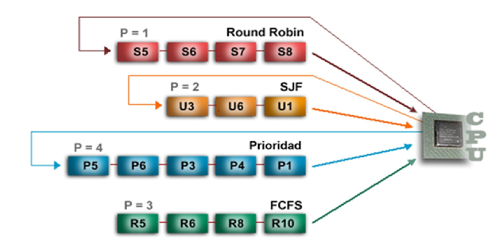

Inicio
Funcionamiento
Ayuda grafica
Pie de pagina
Jhon Alexander y Derly Varon
A continuacion mostraremos el procedimiento para el manejo adecuado de nuestro software
Empecemos!
Funcionamiento

1
Una vez se ejecuta la aplicación se dirige a esta ventana donde se encuentra en la parte superior las opciones de minimizar, maximizar y cerrar ventana, también se observa en la barra de navegación el menú. El botón en la esquina inferior derecha (Prueba de algoritmos) dirige a la ventana que permite realizar la prueba de todos los algoritmos.

2
Una vez se realiza el clic en la opción del menú se despliegan las opciones Manual de Usuario, Algoritmos de procesos y Créditos. La primera opción dirige a este menú, la segunda a la teoría de los algoritmos, finalmente en créditos se despliega una página que muestra la información correspondiente a los creadores de la aplicación.

3
Cuando se abre la ventana se tienen las opciones de ingreso de datos de los procesos bloqueadas hasta que realice la selección del algoritmo a ejecutar.

5
Para el ingreso de los procesos se asigna una identificación o nombre al proceso en el campo frente a (proceso) luego se indican los demás valores. Para cada uno de los algoritmos se habilita automáticamente los campos que requiere. Una vez se han completado los campos se debe dar clic en añadir proceso para que éste sea almacenado. De igual manera se realiza para los otros procesos, cuando haya finalizado el ingreso debe dar clic en aplicar algoritmo y luego en resultados para observarlos

6
Para el algoritmo de colas múltiples cuenta con un campo adicional al indicador de nombre o identificación del proceso, el tipo, esta variable indica el algoritmo de planificación de procesos al cual se realiza la inserción, a continuación, se muestra el tipo que corresponde a cada uno.
Copyright © 2022 - Derly no programo esta pagina profe
{kind=link}
{kind=link}
{kind=link}
{kind=link}
{kind=link}